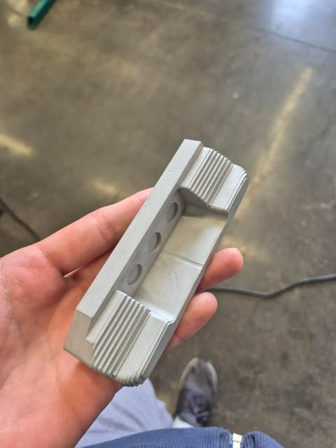
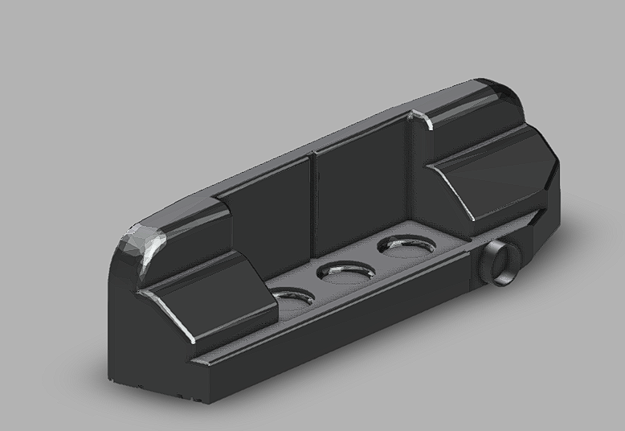
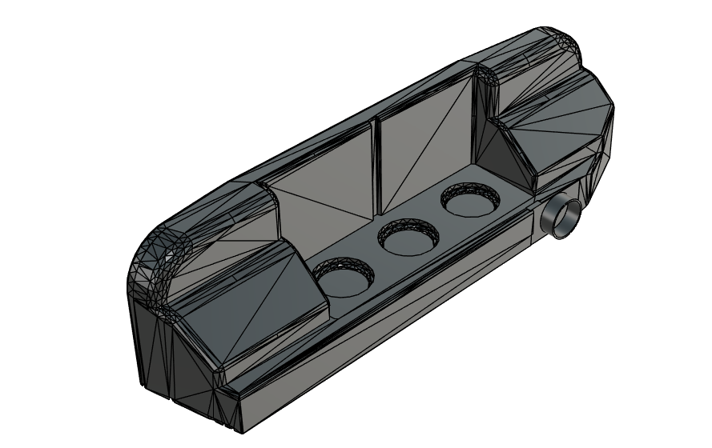
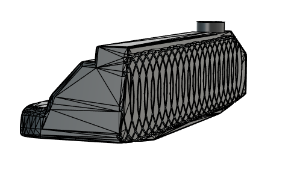

Golf putter project




Goal
Explore the intersection of engineering design and functional performance.
Design
Modeled in Fusion 360 with focus on balance, symmetry, and clean geometry.
Manufacturing
Produced using precision machining techniques for accuracy and finish quality.